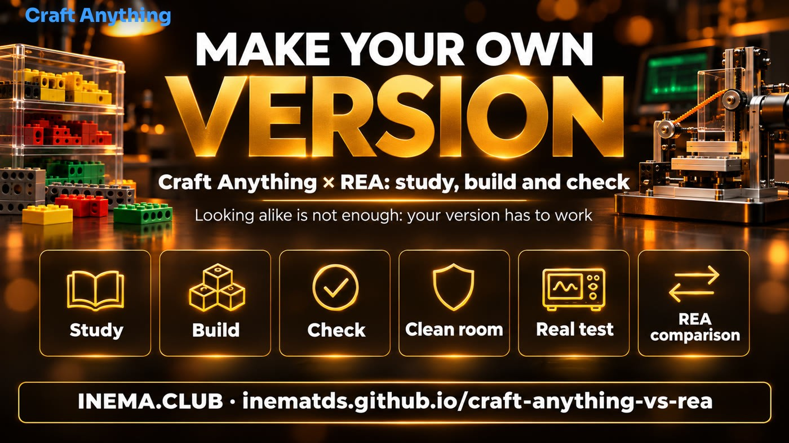

Build your own version of an app. Then prove that it works.
Craft Anything studies the original, asks an AI agent to build your version, and checks how closely it matches. Here, you’ll learn how to use it, see our test, and get a way to check any agent’s work.
Craft Anything is a free, open source program that looks at a website, app, or game, asks an AI agent (such as Claude Code) to write its own version from scratch, and compares the result with the original. This guide shows you how to install and use it safely, compares it with REA, another open source tool that shows how a program works under the hood, and shares a real test we ran here. The kit includes a similarity scale and a feature checklist to check the copy with any agent. You need a computer and a code agent signed in; the kit requires Node.js and Python 3.
🎬 Watch the video
Craft Anything: point at an app and AI makes your own version
The video behind this kit (in Portuguese): how Craft Anything studies, builds and checks, the auto-mode safety switch, a real test with a whiteboard app and the comparison with REA.
The idea is old: in 2009, Markus Persson saw the game Infiniminer and made his own version in about a week, without the original’s code. It became Minecraft, and Microsoft bought Mojang for US$ 2.5 billion in 2014. Today, an AI agent does the heavy lifting; Craft Anything organizes the work.

🔍 Studies the original
Takes screenshots, measures colors, fonts, and spacing, and reads visible text at three screen widths: laptop, tablet, and phone.
🛠️ An agent builds
It runs your code agent (Claude Code is the first supported one) and asks it to build a new version from scratch, using your name and colors.
✅ Checks and improves
It compares your version with the original, lists what still differs, and sends that list back to the agent, round after round, until the result looks similar.
Source: github.com/storytold/craft-anything — open source (MIT or Apache-2.0), made by the ArtCraft team, version 0.6.0 from Nov 9, 2026, still in “early alpha.”
How it works
The 4 steps
Point to the original, say what you want, and press Start. When it needs your decision, it asks in plain language.
1 · Study→2 · Build→3 · Check→4 · Done
1
Study
Opens the original in a private browser and records what a visitor sees at 1440, 768, and 390 px.
2
Build
The agent writes a new project in the language you ask for (or the one it thinks is best).
3
Check
Compares the screens side by side and lists the differences. It stops when the score reaches “Good enough” (90% by default).
4
Done
Open the result or ask for changes in the box below, and it will refine it again.
Clean room × Deep
🧼 Clean room (default)
Uses only what a visitor can see: screenshots, visible text, measurements, colors, fonts, and open menus. It does not read code, files, or a page’s source code. Tools that look under the hood are blocked. Always use this when the original isn’t yours.
🔬 Deep
Uses all tools: reads the program’s code and files (with Ghidra, if installed) and the website’s JavaScript. Only use it for things you own or have permission to examine.
⚠️ Clean room is not an isolated box
It is a rule about what Craft Anything allows and blocks. The agent you run still acts as you, with your permissions. In our test, the Claude Code builder even read personal settings on the computer. To truly isolate it, run it on a separate computer or in a separate folder, without passwords or keys (see agent-box).
Terms used here
Code agent
An AI that writes and runs programs on your computer, such as Claude Code. Harness is the program that gives an AI model tools to act (read, write, and run commands).
CLI, MCP, and ACP
CLI = use it in a terminal by typing commands. MCP and ACP are standard “plugs” that connect an AI agent to tools (MCP) or to another program that controls it (ACP).
Reverse engineering
Finding out how a program works by looking at what it does or at the finished file, without its source code. Ghidra, Hopper, IDA, and Kuna are programs that “translate” an executable into something readable.
Sandbox
An isolated box where a program runs without being able to change the rest of the computer. Chromium uses one; neither of the two tools here does.
SHA256
A file’s “verification code.” If the code for your download matches the one that was published, the file arrived intact and wasn’t replaced.
Early alpha
A very early version: it works, but changes quickly and still has bugs. AppImage, .deb, .rpm, snap, and Flatpak are formats for installing programs on Linux.
Requirements
What you need
For Craft Anything and the checking kit in this repository.
💻 A computer
Windows, macOS, Linux (Intel/AMD or ARM), or FreeBSD. Chrome, Edge, Brave, or Chromium must be installed: it needs to open a browser to study websites.
🤖 A code agent signed in
Claude Code (the first supported one), or Copilot CLI and Grok through the ACP protocol. It uses your login; Craft Anything never sees your account.
🧰 For the kit
Node.js 18 or newer with Playwright (for the similarity scale) and Python 3 (for the feature checklist). You don’t need Craft Anything.
How-to guide · step by step
Install and set it up safely
Six steps. Step 4 matters most: turn off automatic mode so it asks before running commands.
1
Download from the official page and verify it
On the repository’s releases page, download the file for your system: .msi (Windows), .dmg (macOS), or on Linux the compressed .tar.gz package (the one we tested), the .AppImage (a single file that runs directly), the .deb (Ubuntu/Debian), or the .rpm (Fedora). Compare the SHA256 “verification code” with the SHA256SUMS.txt file on the same page: if they match, the file arrived intact and is the one that was published. That’s what we did in our test:
# Linux ARM64; on Intel/AMD, replace aarch64 with x86_64gh release download v0.6.0 -R storytold/craft-anything -p 'craft-anything-0.6.0-linux-aarch64.tar.gz' -p 'SHA256SUMS.txt'grep linux-aarch64.tar.gz SHA256SUMS.txt; sha256sum craft-anything-0.6.0-linux-aarch64.tar.gz
# the two codes must match; then:tar -xzf craft-anything-0.6.0-linux-aarch64.tar.gz
./craft-anything-0.6.0-linux-aarch64/bin/craft-anything # the desktop app
./craft-anything-0.6.0-linux-aarch64/bin/craft-anything-cli doctor # the command line
No gh? Download it in your browser from github.com/storytold/craft-anything/releases. Want to go beyond SHA256? The page also has SHA256SUMS.txt.asc and the release-signing-key.asc key so you can check the signature with gpg (in our test: “Good signature”). Their README warns that Flatpak can’t open the browser, which is required to study websites: choose another format.
2
Install Claude Code and sign in
If you don’t have it yet, install it and sign in with your account (subscription). Craft Anything runs your claude as it is.
# macOS and Linuxcurl -fsSL https://claude.ai/install.sh | bash
claude# the first time, follow the login steps in your browserclaude auth status # checks that you’re signed in# Windows (PowerShell): irm https://claude.ai/install.ps1 | iex
3
Connect the agent in Craft Anything
In the app: Settings → AI → Harnesses → Detect. It will find the installed Claude Code. In the command line, craft-anything-cli doctor shows what’s missing.
4
Turn off automatic mode
Settings → Safety → Auto mode → off. It is on by default: the builder runs commands (such as npm install) without asking. When it’s off, according to their documentation, an “Allow once / Always for this project / Don't allow” card appears before each new type of action (in our test it was on and didn’t ask anything). Installing packages runs code on your computer; choose “Always” only for things you trust.
5
Choose a project folder
Settings → General. The default is Documents/Craft Anything. Each project gets a folder with craft.json (the request and history), capture/ (what it saw in the original), app/ (your version), and checks/ (each comparison).
6
Make your first request
On the Make screen: choose Website, App, or Game, paste the address, leave Clean room on, describe what you want, and press Start. Or use the command line (craft-anything-cli, included with the .tar.gz; their README says the AppImage includes it too, with --cli):
craft-anything-cli rebuild https://example.com "Recreate this website" --clean-room
craft-anything-cli rebuild https://example.com "Make the header blue" --continue-in "<project folder>"
The whiteboard test
A pretty copy that can’t draw is no good
A good test for any tool like this is an open drawing whiteboard, such as Excalidraw: a simple look and lots of features that are easy to check. Raise “Good enough” to 95% in Settings and ask:
Make my own version of this whiteboard app and call it <NOME>. Keep the same drawing tools and
layout, but use my own name and colors.
You can ask in Portuguese too: “Build my own version of this whiteboard app and call it <NOME>. Keep the same drawing tools and layout, but use my own name and colors.” Use an instance you can test, never a website that requires a login.
When it’s ready, test all 16 features
Rectangle
Circle / ellipse
Diamond
Line
Arrow
Pencil (freehand drawing)
Text
Stroke and fill color
Select and move
Resize
Erase
Undo / redo
Zoom
Light / dark theme
Export image
Your own name and branding
The kit creates this list with instructions for testing each feature and fails while proof is missing: python3 conferir/funcoes.py gerar quadro-branco --nome "<NOME>" --saida checklist.md.
Only then change the branding
Once everything works, ask in the change box for a new logo, a purple color, and the name everywhere. First make it work, then make it look like you: mixing the two can confuse the agent. The ready-to-use request is in pedidos/3-mudanca-de-marca.md. What matters is the experience of using it, not the screenshot.
Comparison
Craft Anything × REA
Facts checked on Nov 10, 2026, using each repository’s README and the GitHub API. Details and sources in COMPARACAO.md (in Portuguese).
Craft Anything
REA (Reverse Engineer Anything)
What it does
Studies, asks an agent to build, and checks the result, all in one app
Gives your agent tools to study programs; the agent explains with evidence and can build your version
Who builds
An agent it calls (Claude Code first)
The agent you already use (Claude Code, Codex, Cursor, Gemini CLI…)
How it checks
Automatically: screens at 3 widths, up to “Good enough”
No built-in visual check; the agent tests what it made
Clean room
On by default
No mode with this name
Looking under the hood
Deep mode (built-in tools + Ghidra)
Its strength: Hopper, Ghidra, IDA, or Kuna; .NET, Android, Electron, firmware…
Format
Desktop app + CLI + MCP
MCP + CLI (Node.js)
License
MIT or Apache-2.0
MIT
Created
Oct 31, 2026 · ~26 thousand stars
Apr 14, 2026 · ~450 thousand stars
Maturity
0.6.0, “early alpha”
rea-agents 6.8.0
Is it an isolated box?
No (their README says so)
No: it runs with your permissions
“Is Craft Anything the parent of REA?” No.
REA came out six and a half months earlier, belongs to a different owner, is written in a different language, and neither README mentions the other. And REA doesn’t “only show how things work”: its README says the agent can build a version for your project. The real difference is in how they are packaged: Craft Anything puts everything in one app with clean room turned on; REA is a deeper study toolbox, and your agent does the building.
Use Craft Anything when…
You want to remake a website, simple app, or game your way, without reading anyone’s code, and want a ready-made check.
Use REA when…
You want to understand how a feature in one of your programs works under the hood: an algorithm, a file format, or an installed app.
Use this repository’s kit when…
You already have an agent and want to check any copy: similarity at 3 widths and evidence for every feature.
Real test · Nov 10, 2026
What happened when we ran it here
Linux ARM64 computer, Claude Code with a subscription, no API keys. Original: a local water-tracking page (“Copo Cheio”). Request: the same page with the name “Gota Certa” and a green color, in clean room mode.
The two scores don’t conflict: Craft Anything’s score combines layout, details, and text; our scale looks only at where each element is, and the changed name and footer weigh more heavily. That’s why we use a target of 85.
Original (left) and the version made by Craft Anything with Claude Code (right), at 1440 px.Difference map at 390 px: red = different. The new name and footer lower the score.
What worked and what got blocked
worked
Download verified: SHA256 and GPG signature match.
doctor: healthy; found Claude Code, Codex, and Chromium.
commands: 322 commands (the README says 320).
Clean room rebuild finished and worked: add, subtract, reset, progress bar, and phone view.
Cost: charged to the subscription (“api_billed_usd”: 0).
blocked
Chromium from snap wouldn’t open; Playwright’s was blocked by Ubuntu’s sandbox. It worked after using a shortcut only for the local page.
Automatic mode is on by default: it ran npm install without asking.
The agent added things we didn’t ask for (saving in the browser, a footer message) and told us.
On the first try, it created a configuration outside the test folder.
Outputs, commands, and details: TESTE-AQUI.md (in Portuguese).
The kit
The “Check” step for any agent
Two scales that don’t depend on Craft Anything or REA: one measures how similar the result is, the other requires proof that it works. Plus five ready-to-use requests you can paste into your agent.
1
Get the kit
git clone https://github.com/inematds/craft-anything-vs-rea
cd craft-anything-vs-rea
npm install -g playwright && npx playwright install chromium # once only
2
Measure similarity at all 3 widths
Enter the original and your version (an address or an .html file). You’ll get a table with structure (where each element is, ignoring color), color (whether the palettes match; for information only), and matching pixels, plus side-by-side screenshots and a difference map. It uses 1440, 820, and 390 px (Craft Anything uses 768 for tablets); change them with --larguras.
The scale isn’t fooled by a dark background: two different dark pages can have more than 90% of the same pixels, but their structure score can be below 50.
3
Require proof for every feature
python3 conferir/funcoes.py modelos # quadro-branco, genericopython3 conferir/funcoes.py gerar quadro-branco --nome "Rabisco" --saida checklist.md
# the agent tests, marks [x], and writes the proof on each line; then:python3 conferir/funcoes.py conferir checklist.md # 0 = all proven · 1 = some missing
The quadro-branco template includes 16 features for a drawing app. For another type of app, use generico (10 common features: menu, main action, form, phone, keyboard…) and replace the lines with features from your app: python3 conferir/funcoes.py gerar generico --nome "MeuApp" --saida checklist.md.
Want an automatic feature test? conferir/exemplos/funcoes-contador.js is what we used in the real test; copy it and change the steps for your app.
4
Use the ready-made requests
Open a request, replace what’s between < >, and paste it into the agent’s chat (or the request box in Craft Anything).
bash tests/rodar.sh: more than 30 checks, no internet required.
No cloud
The local option
Craft Anything uses local models only for questions and analysis; to build, it needs an installed code agent. If you want everything running on your computer, without relying on a cloud model, the option we’ve already tested is REA with a local harness and an open model in Ollama.
🔓 rea-sem-travas
dsh harness + open model in Ollama + REA, all local. Open the guide
🧾 rea-com-provas
The agent has to prove what it says it understood; Python checker. Open the guide
🧭 rea-engenharia-reversa
The REA guide with a test built from scratch. Open the guide
📦 caixa-do-agente
Runs any agent in a disposable Docker box, without network access or your .env files. Open the guide
🎨 site-inspirado
A website inspired by your references, with a gate that checks the page. Open the guide
📈 site-que-vende
Measures the 5 patterns of a website that brings in customers and tells you what to fix. Open the guide
Responsible use
Study only what you own or have permission to examine. Craft Anything does not bypass DRM, logins, or anti-cheat systems.
Your version is written from scratch: don’t use the original’s logo, photos, or text without permission.
Run it in a separate folder, without passwords, keys, or customer data.